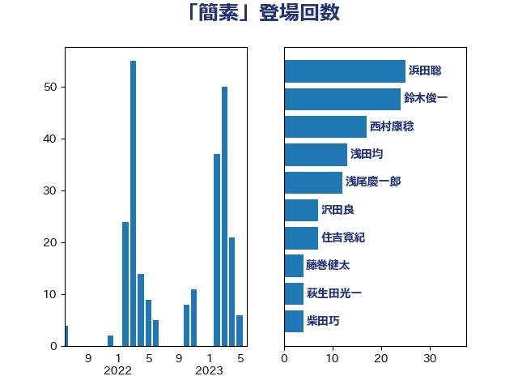

単語「簡素」

| 浜田聡 | NHK党 | 25 回 |
| 鈴木俊一 | 自由民主党 | 24 回 |
| 西村康稔 | 自由民主党 | 17 回 |
| 浅田均 | 日本維新の会 | 13 回 |
| 浅尾慶一郎 | 自由民主党 | 12 回 |
| 沢田良 | 日本維新の会 | 7 回 |
| 住吉寛紀 | 日本維新の会 | 7 回 |
| 藤巻健太 | 日本維新の会 | 4 回 |
| 萩生田光一 | 自由民主党 | 4 回 |
| 柴田巧 | 日本維新の会 | 4 回 |
| 松本剛明 | 自由民主党 | 4 回 |
| 岸田文雄 | 自由民主党 | 4 回 |
| 金子恭之 | 自由民主党 | 3 回 |
| 福田昭夫 | 立憲民主党 | 3 回 |
| 櫻井充 | 自由民主党 | 3 回 |
| 森山浩行 | 立憲民主党 | 3 回 |
| 柳ヶ瀬裕文 | 日本維新の会 | 3 回 |
| 加藤勝信 | 自由民主党 | 3 回 |
| 上田清司 | 国民民主党 | 3 回 |
| 赤松健 | 自由民主党 | 2 回 |
| 竹谷とし子 | 公明党 | 2 回 |
| 稲富修二 | 立憲民主党 | 2 回 |
| 浅野哲 | 国民民主党 | 2 回 |
| 梅村聡 | 日本維新の会 | 2 回 |
| 岬麻紀 | 日本維新の会 | 2 回 |
| 山井和則 | 立憲民主党 | 2 回 |
| 小野泰輔 | 日本維新の会 | 2 回 |
| 伊佐進一 | 公明党 | 2 回 |
| 鰐淵洋子 | 公明党 | 1 回 |
| 高橋千鶴子 | 日本共産党 | 1 回 |
| 馬淵澄夫 | 立憲民主党 | 1 回 |
| 馬場伸幸 | 日本維新の会 | 1 回 |
| 角田秀穂 | 公明党 | 1 回 |
| 藤井比早之 | 自由民主党 | 1 回 |
| 船田元 | 自由民主党 | 1 回 |
| 舩後靖彦 | れいわ新選組 | 1 回 |
| 稲津久 | 公明党 | 1 回 |
| 田畑裕明 | 自由民主党 | 1 回 |
| 田島麻衣子 | 立憲民主党 | 1 回 |
| 田名部匡代 | 立憲民主党 | 1 回 |
| 熊谷裕人 | 立憲民主党 | 1 回 |
| 清水真人 | 自由民主党 | 1 回 |
| 梅村みずほ | 日本維新の会 | 1 回 |
| 林芳正 | 自由民主党 | 1 回 |
| 岩谷良平 | 日本維新の会 | 1 回 |
| 岡田直樹 | 自由民主党 | 1 回 |
| 小山展弘 | 立憲民主党 | 1 回 |
| 守島正 | 日本維新の会 | 1 回 |
| 大家敏志 | 自由民主党 | 1 回 |
| 堂込麻紀子 | 無所属 | 1 回 |
| 古賀之士 | 立憲民主党 | 1 回 |
| 古川康 | 自由民主党 | 1 回 |
| 友納理緒 | 自由民主党 | 1 回 |
| 前原誠司 | 国民民主党 | 1 回 |
| 中川貴元 | 自由民主党 | 1 回 |
| 中川康洋 | 公明党 | 1 回 |
| おおつき紅葉 | 立憲民主党 | 1 回 |